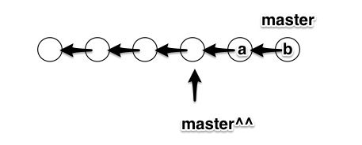
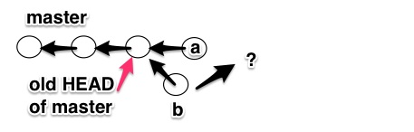

Using git effectiely
Live
is.gd/derwiki_git
presented by
@derwiki
for AdRoll, March 31, 2015
What is git?
- Version control system like SVN, CVS, RCS, mercurial, etc
- File systems keep track of directories, files, and contents
- File systems only care about the current state
- Installing git to part of a filesystem and creating "savepoints" (commits) allows you to easily navigate between different states the filesystem has been in
Controlling git
- There are only 156 commands ( git help --all )
-
add
add--interactive
am
annotate
apply
archimport
archive
bisect
bisect--helper
blame
branch
bundle
cat-file
check-attr
check-ignore
check-mailmap
check-ref-format
checkout
checkout-index
cherry
cherry-pick
citool
clean
clone
column
commit
commit-tree
config
count-objects
credential
credential-cache
credential-cache--daemon
credential-osxkeychain
credential-store
cvsexportcommit
cvsimport
cvsserver
daemon
describe
diff
diff-files
diff-index
diff-tree
difftool
difftool--helper
fast-export
fast-import
fetch
fetch-pack
filter-branch
fmt-merge-msg
for-each-ref
format-patch
fsck
fsck-objects
gc
get-tar-commit-id
grep
gui
gui--askpass
hash-object
help
http-backend
http-fetch
http-push
imap-send
index-pack
init
init-db
instaweb
log
ls-files
ls-remote
ls-tree
mailinfo
mailsplit
merge
merge-base
merge-file
merge-index
merge-octopus
merge-one-file
merge-ours
merge-recursive
merge-resolve
merge-subtree
merge-tree
mergetool
mktag
mktree
mv
name-rev
notes
p4
pack-objects
pack-redundant
pack-refs
patch-id
prune
prune-packed
pull
push
quiltimport
read-tree
rebase
receive-pack
reflog
relink
remote
remote-ext
remote-fd
remote-ftp
remote-ftps
remote-http
remote-https
remote-testsvn
repack
replace
request-pull
rerere
reset
rev-list
rev-parse
revert
rm
send-email
send-pack
sh-i18n--envsubst
shell
shortlog
show
show-branch
show-index
show-ref
stage
stash
status
stripspace
submodule
subtree
svn
symbolic-ref
tag
unpack-file
unpack-objects
update-index
update-ref
update-server-info
upload-archive
upload-pack
var
verify-pack
verify-tag
web--browse
whatchanged
write-tree
- We're going to cover them all
- ~20 seconds per command, so let's dive in

Installing git to a directory
-
git init
- Creates a .git directory in your directory alongside everything else that was there
- .git contains: the object model, database of the object model, and other project configurations
$ tree .git/
.git
├── COMMIT_EDITMSG
├── HEAD
├── config
├── description
├── hooks
│ ├── pre-commit
├── index
├── info
│ └── exclude
├── logs
│ ├── HEAD
│ └── refs
│ └── heads
│ ├── adam-style-index
│ └── master
├── objects
│ ├── 01
│ │ └── ef3e6630af133b41bd954e220f31231aa281d9
Objects: blobs and trees
- blob: contents of a file
- tree: record of a directory in a specific state
- i.e. list of blobs and trees in the current tree
$ git ls-tree HEAD
100644 blob 050c9d95c7e2ec43e92b19e6719ab522f580a2a8 .gitignore
100644 blob 45e30c639e2eb1c93ee7ca8eb89b120dc6d46391 Gemfile
100644 blob 6136bceb0bbe82b4f5786e003c1e6e5a9fa9d976 Gemfile.lock
100644 blob dd4e97e22e159a585b20e21028f964827d5afa4e README.rdoc
100644 blob ba6b733dd2358d858f00445ebd91c214f0f5d2e5 Rakefile
040000 tree 9149e8d1f244078f92a48197be0ea0e89feb1df3 app
040000 tree 19b9d6c8a39c3ecc9e985b34af88ab219e07df75 bin
100644 blob bd83b25412305f93fdb0a892aded30e5178899ba config.ru
040000 tree 395350c15f688e10ef8115eaf609fcfafcf51bea config
040000 tree 602980f52d9fe985bf9f9ec25c77513b51a42d52 db
040000 tree 07d89d0b7e50929dea0dcf7e7354358c1133be86 lib
040000 tree 29a422c19251aeaeb907175e9b3219a9bed6c616 log
040000 tree 23a3236904020a96c2a827875e3e065213747cda public
040000 tree 03fb84ec8cc53685767345fd32d53af59762c622 test
040000 tree 8084e8e04d510cc28321f30a9646477cc50c235c vendor
git show 050c9d95
$ git show 050c9d95 # the SHA1 of .gitignore's blob
# See https://help.github.com/articles/ignoring-files for more
#
# If you find yourself ignoring temporary files generated by
# or operating system, you probably want to add a global ignore
# git config --global core.excludesfile '~/.gitignore_global'
# Ignore bundler config.
/.bundle
# Ignore the default SQLite database.
/db/*.sqlite3
/db/*.sqlite3-journal
# Ignore all logfiles and tempfiles.
/log/*
!/log/.keep
/tmp
Objects: commits
- commit: attached to a tree (which is a snapshot of a directory in it's current state)
- Contains metadata: author, when the tree was modified, commit message, etc
- Only contains information about the current commit
- i.e. how the tree differs from the tree of the most recent commit
- Commits contain references to their parents commit(s)
- You can traverse up parent commits if you need information prior to the current commit
Object relationships
Family tree

Raw commit
$ git show --format=raw
commit 67ee28dcc27ee5ab59061ae47a0b81dd19888274
tree e7dd337b5f247393f9f23e03eef3a176eb32e1a1
parent 78e5e7abdb69d32f886e950b3329fdc0c249f6dd
author Adam Derewecki 1427591530 -0700
committer Adam Derewecki 1427591530 -0700
Initial db/schema.rb
diff --git a/db/schema.rb b/db/schema.rb
new file mode 100644
index 0000000..9affc04
--- /dev/null
+++ b/db/schema.rb
@@ -0,0 +1,24 @@
+# encoding: UTF-8
+# This file is auto-generated from the current state of the
+# of editing this file, please use the migrations feature of
+# incrementally modify your database, and then regenerate
SHA-1 hashes
- Hashing algorithm used to identify all objects
- blob: changing the file contents changes SHA-1
- tree: adding/removing a subtree, changing a blob changes SHA-1
- commit: changing blob, tree, or commit metadata changes SHA-1
Raw commit
$ git show --format=raw | head -n 7
commit 67ee28dcc27ee5ab59061ae47a0b81dd19888274
tree e7dd337b5f247393f9f23e03eef3a176eb32e1a1
parent 78e5e7abdb69d32f886e950b3329fdc0c249f6dd
author Adam Derewecki 1427591530 -0700
committer Adam Derewecki 1427591530 -0700
Initial db/schema.rb
$ git commit --amend -m "Initial db/schema.rb (revised)"
[adam/style-index b7eabfc] Initial db/schema.rb (revised)
Date: Sat Mar 28 18:12:10 2015 -0700
1 file changed, 24 insertions(+)
create mode 100644 db/schema.rb
$ git show --format=raw | head -n 7
commit b7eabfc8b46f259eee072cb6c79595452b72331b
tree e7dd337b5f247393f9f23e03eef3a176eb32e1a1
parent 78e5e7abdb69d32f886e950b3329fdc0c249f6dd
author Adam Derewecki 1427591530 -0700
committer Adam Derewecki 1427610295 -0700
Initial db/schema.rb (revised)
HEAD pointer
- HEAD: pointer to the currently checked out commit
- i.e. the head of the current branch
- HEAD^: the parent of HEAD
- HEAD~2: the grandparent of HEAD
-
$ cat .git/HEAD ref: refs/heads/master $ cat .git/refs/heads/master 67ee28dcc27ee5ab59061ae47a0b81dd19888274 $ git rev-parse HEAD 67ee28dcc27ee5ab59061ae47a0b81dd19888274
Branch pointers
-
$ git branch -v adam/style-index ddf0c20 Add styling to tweet#index grant/style-new 28bbd41 Convert tweet#new, tweet#form * master 67ee28d Initial db/schema.rb
-
$ tree .git/refs/heads/ .git/refs/heads/ ├── adam │ └── style-index ├── grant │ └── style-new └── master $ cat .git/refs/heads/master 2c75ffc1b6c0f5e4a8265bac78ba0640e236cc86
- git checkout -b $newbranch
- Creates branch $newbranch from current HEAD
Fast-forwards
- e.g. your local master is 5 commits behind origin/master
- To update your local master, you can fast-forward to origin/master
- git pull origin master --ff-only
Moving backwards with reset
- e.g. moving backwards two commits
- 
- git reset master^^
- Only changes HEAD
- The changes contained in commits 'a' and 'b' are now un-staged changes
git reset HEAD^^
$ git status
On branch master
nothing to commit, working directory clean
$ git log --oneline
67ee28d (HEAD, master) Initial db/schema.rb
78e5e7a Add scaffolding for Tweet
2328d04 Add bootstrap, haml, remove spring
9ba1482 rails new TwitterClone
$ git reset HEAD^^
Unstaged changes after reset:
M config/routes.rb
$ git log --oneline
2328d04 (HEAD, master) Add bootstrap, haml, remove spring
9ba1482 rails new TwitterClone
$ git status
On branch master
Changes not staged for commit:
(use "git add ..." to update what will be committed)
(use "git checkout -- ..." to discard changes in working directory)
modified: config/routes.rb
Untracked files:
(use "git add ..." to include in what will be committed)
app/assets/stylesheets/tweets.scss
app/controllers/tweets_controller.rb
app/models/tweet.rb
app/views/tweets/
db/migrate/
db/schema.rb
git reset --hard
- Moves HEAD and discards changes, instead of leaving them in working tree
-
$ git log --oneline bc9f9f5 (HEAD, master) Remove comments from Gemfile 6c8cd70 Add bootstrap to and scss'ed application.scss 67ee28d Initial db/schema.rb 78e5e7a Add scaffolding for Tweet 2328d04 Add bootstrap, haml, remove spring 9ba1482 rails new TwitterClone
$ git reset --hard HEAD^^ HEAD is now at 67ee28d Initial db/schema.rb
$ git log --oneline 67ee28d (HEAD, master) Initial db/schema.rb 78e5e7a Add scaffolding for Tweet 2328d04 Add bootstrap, haml, remove spring 9ba1482 rails new TwitterClone
$ git status On branch master nothing to commit, working directory clean
git reset --hard
- Can be used to reset to any arbitrary commit
- Reliable way to set any branch to origin's master
-
$ git fetch origin Fetching repository, done.
$ git reset --hard origin/master HEAD is now at 67ee28d Initial db/schema.rb - git reset --hard SHA1 is equivalent to git reset SHA1 ; git clean -xdf
Working tree
- Tree object that represents the current state of the filesystem
- If there are no changes from the most recent commit, the working tree is the same as the commit's tree
- git diff to view differences between the most recent commit's tree and the working tree
-
$ git diff diff --git a/Gemfile b/Gemfile index 45e30c6..c20f939 100644 --- a/Gemfile +++ b/Gemfile @@ -1,47 +1,22 @@ source 'https://rubygems.org' - -# Bundle edge Rails instead: gem 'rails', github: 'rails/rails' gem 'rails', '4.2.0' -# Use sqlite3 as the database for Active Record gem 'sqlite3' -# Use SCSS for stylesheets gem 'sass-rails', '~> 5.0' -# Use Uglifier as compressor for JavaScript assets gem 'uglifier', '>= 1.3.0' -# Use CoffeeScript for .coffee assets and views gem 'coffee-rails', '~> 4.1.0' -# See https://github.com/sstephenson/execjs#readme for more supported runtimes -# gem 'therubyracer', platforms: :ruby group :production do gem 'pg' end
Index / staging area
- Work tree: the tree of in progress changes that are currently ahead of the most recent commit
- Index: a "staging area" between the work tree and the most recent commit
- Used to prepare the next commit
- Stage entire file/directory:
- git add foo/ bar.py
git add --patch
$ git add --patch
diff --git a/app/assets/stylesheets/application.scss b/app/assets/stylesheets/application.scss
index f9cd5b3..298db72 100644
--- a/app/assets/stylesheets/application.scss
+++ b/app/assets/stylesheets/application.scss
@@ -13,3 +13,4 @@
*= require_tree .
*= require_self
*/
+@import "bootstrap";
Stage this hunk [y,n,q,a,d,/,e,?]? ?
y - stage this hunk
n - do not stage this hunk
q - quit; do not stage this hunk or any of the remaining ones
a - stage this hunk and all later hunks in the file
d - do not stage this hunk or any of the later hunks in the file
g - select a hunk to go to
/ - search for a hunk matching the given regex
j - leave this hunk undecided, see next undecided hunk
J - leave this hunk undecided, see next hunk
k - leave this hunk undecided, see previous undecided hunk
K - leave this hunk undecided, see previous hunk
s - split the current hunk into smaller hunks
e - manually edit the current hunk
? - print help
@@ -13,3 +13,4 @@
*= require_tree .
*= require_self
*/
+@import "bootstrap";
Inspecting the index
$ git status
On branch master
Changes to be committed:
(use "git reset HEAD ..." to unstage)
renamed: app/assets/stylesheets/application.css -> app/assets/stylesheets/application.scss
Untracked files:
(use "git add ..." to include in what will be committed)
untracked-file
$ git diff --cached
diff --git a/app/assets/stylesheets/application.css b/app/assets/stylesheets/application.css
deleted file mode 100644
index f9cd5b3..0000000
--- a/app/assets/stylesheets/application.css
+++ /dev/null
@@ -1,15 +0,0 @@
diff --git a/app/assets/stylesheets/application.scss b/app/assets/stylesheets/application.scss
new file mode 100644
index 0000000..298db72
--- /dev/null
+++ b/app/assets/stylesheets/application.scss
@@ -0,0 +1,16 @@
+@import "bootstrap";
Creating a commit
- Stage files and hunks with git add and git add --patch
- git commit -m "My commit message"
- Open your editor and include the comments of the commit's tree:
- git commit -v
git commit -v
Remove comments from Gemfile
# Please enter the commit message for your changes. Lines starting
# with '#' will be ignored, and an empty message aborts the commit.
# On branch master
# Changes to be committed:
# modified: Gemfile
#
# ------------------------ >8 ------------------------
# Do not touch the line above.
# Everything below will be removed.
diff --git a/Gemfile b/Gemfile
index 45e30c6..c20f939 100644
--- a/Gemfile
+++ b/Gemfile
@@ -1,47 +1,22 @@
source 'https://rubygems.org'
-
-# Bundle edge Rails instead: gem 'rails', github: 'rails/rails'
gem 'rails', '4.2.0'
-# Use sqlite3 as the database for Active Record
gem 'sqlite3'
-# Use SCSS for stylesheets
gem 'sass-rails', '~> 5.0'
-# Use Uglifier as compressor for JavaScript assets
gem 'uglifier', '>= 1.3.0'
-# Use CoffeeScript for .coffee assets and views
gem 'coffee-rails', '~> 4.1.0'
-# See https://github.com/sstephenson/execjs#readme for more supported runtimes
-# gem 'therubyracer', platforms: :ruby
group :production do
gem 'pg'
end
git rebase --interactive
- Re-write history: reorder commits, edit commits in the past, remove commits
- Any time you change a commit, you change its SHA-1
- Which means its children need to be re-written to point to the new SHA-1
-
$ git log --oneline * bc9f9f5 (HEAD, master) Remove comments from Gemfile * 6c8cd70 Add bootstrap to and scss'ed application.scss * 67ee28d Initial db/schema.rb * 78e5e7a Add scaffolding for Tweet * 2328d04 Add bootstrap, haml, remove spring * 9ba1482 rails new TwitterClone $ git rebase -i 2328d04
git rebase --interactive
$ git log --oneline
* bc9f9f5 (HEAD, master) Remove comments from Gemfile
* 6c8cd70 Add bootstrap to and scss'ed application.scss
* 67ee28d Initial db/schema.rb
* 78e5e7a Add scaffolding for Tweet
* 2328d04 Add bootstrap, haml, remove spring
* 9ba1482 rails new TwitterClone
$ git rebase -i 2328d04
pick 78e5e7a Add scaffolding for Tweet
fixup 67ee28d Initial db/schema.rb
pick bc9f9f5 Remove comments from Gemfile
pick 6c8cd70 Add bootstrap to and scss'ed application.scss
# Rebase 2328d04..bc9f9f5 onto 2328d04
#
# Commands:
# p, pick = use commit
# r, reword = use commit, but edit the commit message
# e, edit = use commit, but stop for amending
# s, squash = use commit, but meld into previous commit
# f, fixup = like "squash", but discard this commit's log message
# x, exec = run command (the rest of the line) using shell
#
# These lines can be re-ordered; they are executed from top to bottom.
#
# If you remove a line here THAT COMMIT WILL BE LOST.
#
# However, if you remove everything, the rebase will be aborted.
#
# Note that empty commits are commented out
git rebase --interactive
- After saving/quitting from git rebase -i, the SHA-1 of "Add scaffolding for Tweet" and every child of that has been updated
-
# before $ git log --oneline bc9f9f5 (HEAD, master) Remove comments from Gemfile 6c8cd70 Add bootstrap to and scss'ed application.scss 67ee28d Initial db/schema.rb 78e5e7a Add scaffolding for Tweet 2328d04 Add bootstrap, haml, remove spring 9ba1482 rails new TwitterClone
# after $ git log --oneline 61b6221 (HEAD, master) Add bootstrap to and scss'ed application.scss 74788ff Remove comments from Gemfile acb9b7f Add scaffolding for Tweet 2328d04 Add bootstrap, haml, remove spring 9ba1482 rails new TwitterClone
When and when not to re-write history
- Do: use it to organize your commits in your local branch
- Don't: re-write history of a public branch
- Especially don't: re-write history of master
- Although do: re-write master if you need to remove confidential information from the repo
Where did the commits go?
- After re-writing history with git rebase -i, our code changes now have different SHA-1s
- Still in the object model (.git/objects)
- Unless referenced in another branch, considered a "dangling commit"
-
$ git fsck --full Checking object directories: 100% (256/256), done. dangling commit 1697714d585a6273efc98042eb3041c272d83377 dangling blob a84806f040fbaad43f7bb5bc506b6a32575abe89
-
Stays in object model until you run:
git reflog expire --expire=now --all git gc --prune=now
git reflog
- Mechanism to record when the tip of branches are updated
-
$ git reflog bc9f9f5 (HEAD, master) HEAD@{0}: reset: moving to bc9f9f5 acb9b7f HEAD@{1}: reset: moving to HEAD^^ 61b6221 HEAD@{2}: rebase -i (finish): returning to refs/heads/master 61b6221 HEAD@{3}: rebase -i (pick): Add bootstrap to and scss'ed application.scss 74788ff HEAD@{4}: rebase -i (pick): Remove comments from Gemfile acb9b7f HEAD@{5}: rebase -i (fixup): Add scaffolding for Tweet 78e5e7a HEAD@{6}: rebase -i (start): checkout 2328d04 bc9f9f5 (HEAD, master) HEAD@{7}: commit: Remove comments from Gemfile 6c8cd70 HEAD@{8}: reset: moving to 6c8cd70 67ee28d HEAD@{9}: reset: moving to HEAD^ 6c8cd70 HEAD@{10}: commit: Add bootstrap to and scss'ed application.scss 67ee28d HEAD@{11}: reset: moving to 67ee28d 2328d04 HEAD@{12}: reset: moving to HEAD^^ 67ee28d HEAD@{13}: checkout: moving from grant/style-new to master 28bbd41 (grant/style-new) HEAD@{14}: commit: Convert tweet#new, tweet#form to Bootstrap 67ee28d HEAD@{15}: checkout: moving from master to grant/style-new 67ee28d HEAD@{16}: checkout: moving from adam/style-index to master ddf0c20 (adam/style-index) HEAD@{17}: commit: Add styling to tweet#index 67ee28d HEAD@{18}: reset: moving to master b7eabfc HEAD@{19}: commit (amend): Initial db/schema.rb (revised) 67ee28d HEAD@{20}: checkout: moving from master to adam/style-index 67ee28d HEAD@{21}: commit: Initial db/schema.rb 78e5e7a HEAD@{22}: commit: Add scaffolding for Tweet 2328d04 HEAD@{23}: commit: Add bootstrap, haml, remove spring 9ba1482 HEAD@{24}: commit (initial): rails new TwitterClone
Dealing with merge conflicts
-
Two branches from master each with one commit

- To merge a, master is simply fast-forwarded to a
Dealing with merge conflicts
- This works because the parent of a is the same in the branch and master
- What about b? 
- Two solutions: merge commit or rebase
Merge commits
- Differ from normal commit in that it has two parents
- git checkout master ; git merge b
- Because a was merged into master, master is no longer a direct ancestor of b (like it was when the branch was created)
- git performs a 3-way merge, using the closest common ancestor and the two trees associated master and b
Merge commits
$ git branch -v
adam/style-index ddf0c20 Add styling to tweet#index
* master bc9f9f5 Remove comments from Gemfile
$ git log --oneline
bc9f9f5 (HEAD, master) Remove comments from Gemfile
6c8cd70 Add bootstrap to and scss'ed application.scss
67ee28d Initial db/schema.rb
78e5e7a Add scaffolding for Tweet
2328d04 Add bootstrap, haml, remove spring
9ba1482 rails new TwitterClone
$ git log --oneline adam/style-index
ddf0c20 (adam/style-index) Add styling to tweet#index
67ee28d Initial db/schema.rb
78e5e7a Add scaffolding for Tweet
2328d04 Add bootstrap, haml, remove spring
9ba1482 rails new TwitterClone
$ git merge adam/style-index
Merge made by the 'recursive' strategy.
app/views/tweets/index.html.haml | 32 +++++++++++---------------------
1 file changed, 11 insertions(+), 21 deletions(-)
$ git show --format=raw
commit d9010f8f6f9e82360089a28d7402f94c4c969c4b
tree b33431aa9e4bf5e7c28dc40ea81565fb69c8b245
parent bc9f9f554e8491fe1c71de0ae21d1d194314f611
parent ddf0c201a8d3c584d87a519b10348baaf325b131
author Adam Derewecki 1427692665 -0700
committer Adam Derewecki 1427692665 -0700
Merge branch 'adam/style-index'
Merge commits
$ git log --oneline --graph
* d9010f8 (HEAD, master) Merge branch 'adam/style-index'
|\
| * ddf0c20 (adam/style-index) Add styling to tweet#index
* | bc9f9f5 Remove comments from Gemfile
* | 6c8cd70 Add bootstrap to and scss'ed application.scss
|/
* 67ee28d Initial db/schema.rb
* 78e5e7a Add scaffolding for Tweet
* 2328d04 Add bootstrap, haml, remove spring
* 9ba1482 rails new TwitterClone
Rebasing
- Merge commits are non-destructive; they don't re-write history
- Rebasing re-writes the history of your branch so that it merges in as a fast-forward
- When a branched, master' was the parent of a
- After rebasing onto master, the first commit of the branch now has master as the parent
- TODO graphic
Rebasing
$ git branch -v
adam/style-index ddf0c20 Add styling to tweet#index
grant/style-new 28bbd41 Convert tweet#new, tweet#form to Bootstrap
* master bc9f9f5 Remove comments from Gemfile
$ git checkout adam/style-index
Switched to branch 'adam/style-index'
$ git log --oneline
ddf0c20 (HEAD, adam/style-index) Add styling to tweet#index
67ee28d Initial db/schema.rb
78e5e7a Add scaffolding for Tweet
2328d04 Add bootstrap, haml, remove spring
9ba1482 rails new TwitterClone
$ git rebase master
First, rewinding head to replay your work on top of it...
Applying: Add styling to tweet#index
$ git log --oneline
36dd035 (HEAD, adam/style-index) Add styling to tweet#index
bc9f9f5 (master) Remove comments from Gemfile
6c8cd70 Add bootstrap to and scss'ed application.scss
67ee28d Initial db/schema.rb
78e5e7a Add scaffolding for Tweet
2328d04 Add bootstrap, haml, remove spring
9ba1482 rails new TwitterClone
git cherry-pick
git log --oneline
ddf0c20 (HEAD, adam/style-index) Add styling to tweet#index
67ee28d Initial db/schema.rb
78e5e7a Add scaffolding for Tweet
2328d04 Add bootstrap, haml, remove spring
9ba1482 rails new TwitterClone
$ git checkout master
Switched to branch 'master'
$ git cherry-pick adam/style-index
[master 2c75ffc] Add styling to tweet#index
1 file changed, 15 insertions(+), 25 deletions(-)
rewrite app/views/tweets/index.html.haml (91%)
$ git log --oneline
2c75ffc (HEAD, master) Add styling to tweet#index
bc9f9f5 Remove comments from Gemfile
6c8cd70 Add bootstrap to and scss'ed application.scss
67ee28d Initial db/schema.rb
78e5e7a Add scaffolding for Tweet
2328d04 Add bootstrap, haml, remove spring
9ba1482 rails new TwitterClone
Cherry picking and interactive rebasing
- With git rebase -i, we saw a list of commits with 'pick' as the default action
- You can start an interactive rebase and add any new commits you want as 'pick'
- cherry-pick is a special-case shortcut for when you only have one commit you want to merge in